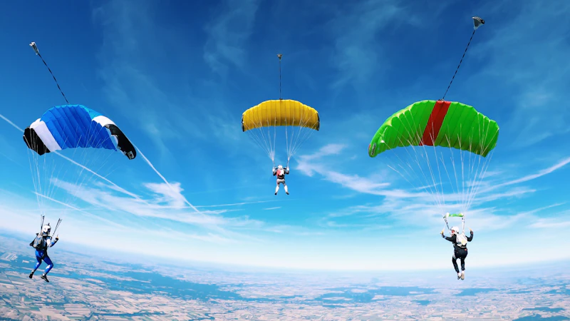
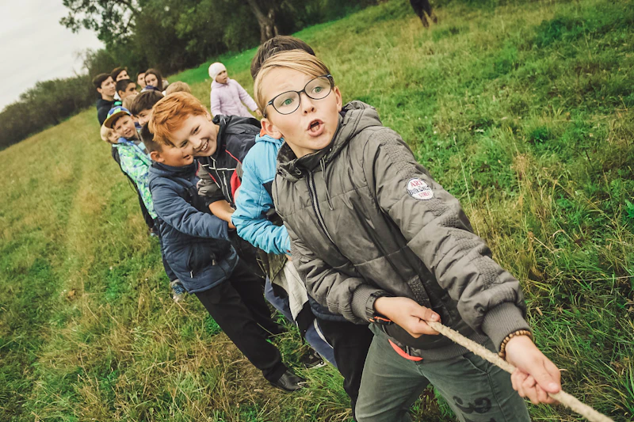

Paket Outbound Paralayang Batu Malang Terlengkap: Harga, Fasilitas & Panduan Lengkap

Pemandangan spektakuler saat terbang paralayang di atas perbukitan Batu, Malang, Jawa Timur.
Paralayang di Batu Malang adalah salah satu aktivitas paling diminati dalam paket outbound yang ditawarkan oleh vendor outbound Batu Malang terpercaya. Terbang melayang di atas perbukitan hijau dengan pemandangan Kota Batu yang memukau dari ketinggian adalah pengalaman yang tak terlupakan bagi setiap peserta outbound.
Kawasan Gunung Banyak di Kota Batu merupakan salah satu spot paralayang terbaik di Indonesia. Dengan ketinggian sekitar 1.300 meter di atas permukaan laut dan kondisi angin yang stabil, lokasi ini telah menjadi tujuan para pecinta olahraga udara dari seluruh Indonesia bahkan mancanegara. Artikel ini akan membahas secara detail mengenai paket outbound paralayang Batu Malang yang bisa Anda pilih.
Keunggulan Paralayang di Batu Malang
Ada beberapa keunggulan yang membuat paralayang di Batu Malang menjadi pilihan utama untuk aktivitas outbound perusahaan maupun komunitas:
Pemandangan Spektakuler dari Ketinggian
Terbang paralayang dari Gunung Banyak memberikan pemandangan 360 derajat yang luar biasa. Anda bisa melihat hamparan hijau perkebunan apel, perkotaan Batu yang tertata rapi, Gunung Arjuno-Welirang yang megah, hingga Gunung Panderman dan Gunung Kawi di kejauhan. Pengalaman visual ini menjadi momen yang sangat berharga untuk dokumentasi kegiatan outbound tim Anda.
Lokasi Take-Off dan Landing Profesional
Area paralayang di Gunung Banyak telah dilengkapi dengan landasan take-off yang tertata rapi dan area landing yang luas serta aman. Semua fasilitas telah memenuhi standar keselamatan penerbangan olahraga udara yang ditetapkan oleh FASI (Federasi Aero Sport Indonesia).
Pilot Tandem Berpengalaman dan Bersertifikasi
Setiap penerbangan tandem dipandu oleh pilot berpengalaman yang telah mengantongi lisensi resmi dari FASI. Para pilot ini telah memiliki jam terbang ribuan jam dan sangat memahami kondisi cuaca serta medan terbang di kawasan Batu. Keselamatan peserta selalu menjadi prioritas utama.
"Paralayang bukan hanya tentang adrenalin, tetapi juga tentang kepercayaan dan kerjasama tim. Ketika seorang peserta berani terbang, itu menunjukkan keberanian dan kepercayaan yang bisa ditransfer ke dalam lingkungan kerja sehari-hari." — Ulil, Koordinator Outbound Gemilang Katun
Jenis Paket Outbound Paralayang yang Tersedia
Vendor outbound Batu Malang terpercaya seperti Gemilang Katun menawarkan beberapa pilihan paket paralayang yang bisa disesuaikan dengan kebutuhan dan anggaran:
1. Paket Tandem Basic
Paket ini ideal untuk peserta yang ingin merasakan sensasi terbang paralayang untuk pertama kalinya. Durasi terbang sekitar 10-15 menit dengan ketinggian standar. Harga mulai Rp 350.000/orang. Fasilitas yang didapat meliputi:
- Penerbangan tandem dengan pilot bersertifikasi
- Peralatan keselamatan lengkap (helm, harness)
- Briefing keselamatan sebelum terbang
- Sertifikat terbang
- Dokumentasi foto dan video dari udara
2. Paket Tandem Premium
Paket premium menawarkan pengalaman terbang yang lebih panjang dengan durasi 20-30 menit. Peserta akan diajak manuver-manuver ringan yang aman dan menikmati pemandangan dari berbagai sudut. Harga mulai Rp 500.000/orang dengan tambahan fasilitas video drone profesional dan sesi foto dengan background Gunung Arjuno.
3. Paket Outbound Combo (Paralayang + Team Building)
Paket paling populer untuk kegiatan perusahaan! Kombinasi antara sesi paralayang tandem untuk seluruh peserta dengan rangkaian kegiatan team building di area sekitar Gunung Banyak. Durasi kegiatan satu hari penuh (08.00-16.00) dengan harga mulai Rp 450.000/orang yang sudah termasuk:
- Paralayang tandem untuk setiap peserta
- Sesi team building games (3-4 permainan)
- Makan siang dan snack
- Air mineral selama kegiatan
- Fasilitator profesional
- Asuransi kegiatan
- Dokumentasi lengkap

Peserta outbound saat briefing keselamatan sebelum sesi paralayang di Batu Malang.
Persiapan Sebelum Paralayang
Agar pengalaman paralayang Anda berjalan optimal dan aman, berikut beberapa persiapan yang perlu dilakukan:
- Gunakan pakaian nyaman — Kenakan pakaian olahraga yang tidak terlalu longgar. Hindari rok, sandal jepit, atau aksesoris yang mudah lepas.
- Sepatu tertutup wajib — Gunakan sepatu olahraga atau hiking yang nyaman dan tidak licin untuk take-off dan landing yang aman.
- Jangan makan terlalu kenyang — Makan ringan 1-2 jam sebelum terbang. Hindari makanan berat yang bisa menyebabkan mual di ketinggian.
- Bawa sunblock dan kacamata — Perlindungan dari sinar matahari sangat penting saat terbang di ketinggian.
- Charge gadget Anda — Pastikan HP Anda terisi penuh untuk mengabadikan momen spektakuler dari udara.
- Datang tepat waktu — Kondisi angin yang optimal biasanya ada di waktu tertentu. Keterlambatan bisa membuat Anda kehilangan slot terbang.
Syarat dan Ketentuan Peserta Paralayang
Untuk menjaga keselamatan, terdapat beberapa syarat yang harus dipenuhi oleh peserta paralayang tandem:
- Usia minimal 12 tahun (di bawah 18 tahun wajib dengan persetujuan orang tua)
- Berat badan maksimal 90 kg
- Tidak memiliki riwayat penyakit jantung, epilepsi, atau vertigo berat
- Tidak dalam pengaruh alkohol atau obat-obatan
- Wanita hamil tidak diperbolehkan mengikuti aktivitas ini
- Bersedia mengisi formulir pernyataan kesehatan dan keselamatan
Waktu Terbaik untuk Paralayang di Batu
Pemilihan waktu yang tepat sangat mempengaruhi kualitas penerbangan paralayang Anda. Berikut panduan waktu terbaik:
Waktu Terbaik dalam Sehari
Pagi hari (09.00-11.00) adalah waktu terbaik dengan kondisi thermal yang mulai aktif dan angin yang cukup stabil. Saat ini visibilitas biasanya sangat baik sehingga pemandangan terlihat jelas dan sempurna untuk foto. Sore hari (14.00-16.00) juga cukup baik dengan thermal yang masih aktif dan cahaya golden hour yang membuat foto dan video lebih dramatis dan indah.
Musim Terbaik dalam Setahun
Musim kemarau (April-Oktober) adalah periode terbaik untuk paralayang di Batu. Cuaca cerah, angin stabil, dan minim risiko hujan membuat penerbangan lebih aman dan nyaman. Namun, beberapa hari di musim hujan juga masih memungkinkan untuk terbang tergantung kondisi cuaca aktual pada hari H.
Standar Keamanan Paralayang di Gemilang Katun
Sebagai vendor outbound Batu Malang terpercaya, Gemilang Katun menerapkan standar keamanan tertinggi untuk setiap aktivitas paralayang:
- Semua pilot memiliki lisensi FASI yang masih aktif dan valid
- Peralatan dicek secara berkala oleh teknisi bersertifikasi
- Briefing keselamatan wajib untuk setiap peserta sebelum terbang
- Asuransi kecelakaan untuk seluruh peserta
- Tim ground crew siaga di area landing
- Komunikasi radio antara pilot dan ground crew selama penerbangan
- Penerbangan hanya dilaksanakan jika kondisi cuaca memenuhi standar keselamatan

Baca Juga
Pertanyaan yang Sering Diajukan (FAQ)
Kesimpulan
Paket outbound paralayang Batu Malang adalah pilihan sempurna untuk memberikan pengalaman tak terlupakan bagi tim perusahaan Anda. Dengan pemandangan spektakuler, pilot berpengalaman, dan standar keselamatan tinggi, paralayang di Batu menjadi aktivitas yang paling diminati dalam setiap kegiatan outbound.
Sebagai vendor outbound Batu Malang terpercaya, Gemilang Katun siap membantu Anda merancang paket outbound paralayang yang sesuai dengan kebutuhan dan anggaran perusahaan. Hubungi kami sekarang untuk mendapatkan penawaran terbaik!